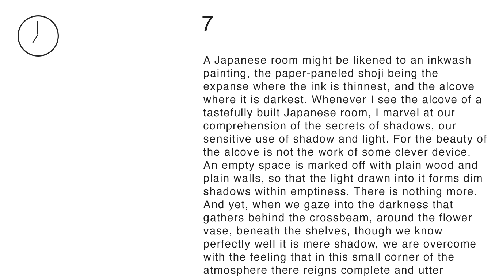
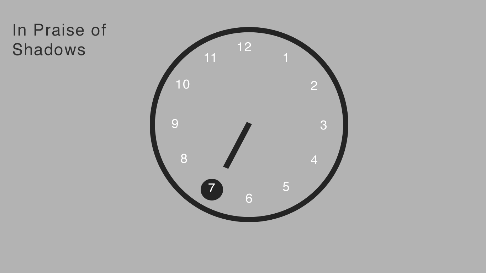
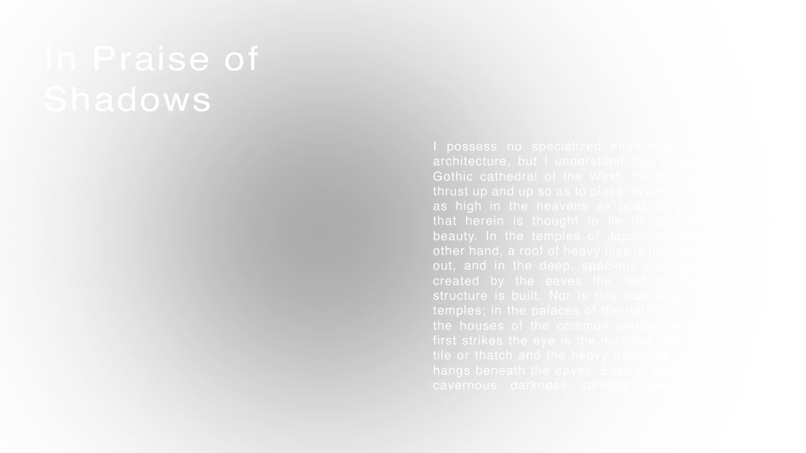
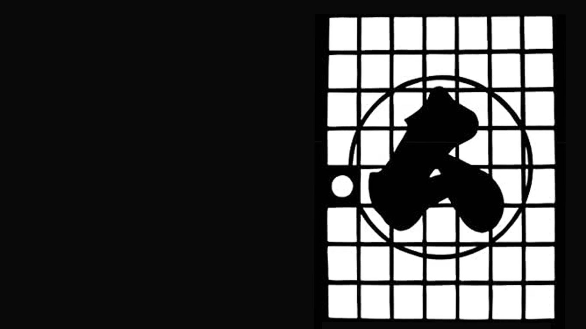
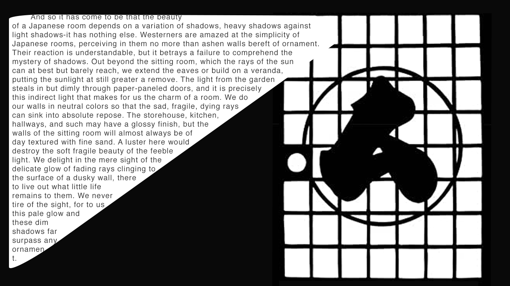
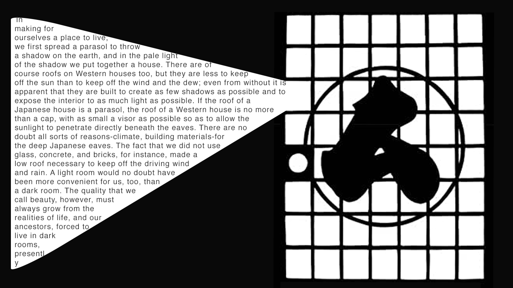
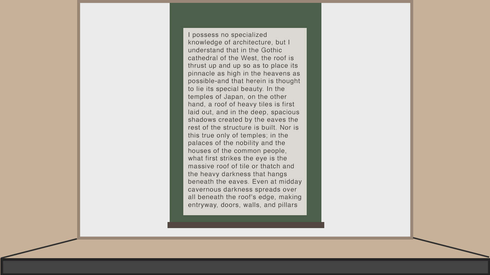

Project 2: Stories as Networks Part 2
In the Praise of Shadows
Excerpt by Jun'ichiro Tanizaki
1.
This is the main webpage.
By moving the clock hand, it reveals the link to the readings.
(Text is divided into 12 sections.)

This is what you get when you click #7.
By clicking the clock on the top right corner, you can go back to main.

hidden numbers
2.

All texts are written in white, and the black blurry cursors work as a shadow to read it.
Texts are automatically going up, representing this quote:
“Have you never felt a sort of fear in the face of the ageless, a fear that in that room you might lose all consciousness of the passage of time, that untold years might pass and upon emerging you should find you had grown old and gray?” - Jun'ichiro
Example of moving text
3.



Traditional japanese style window.
Text will appear when you click the window.

sTokonoma (alcove).